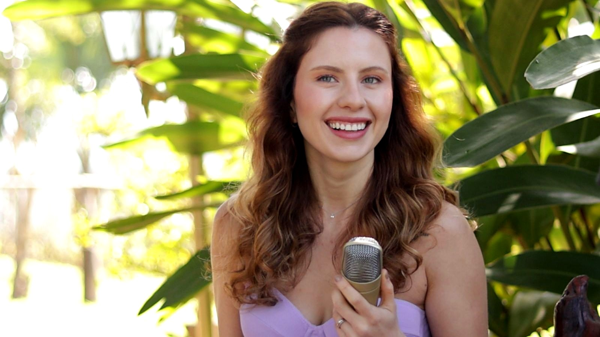
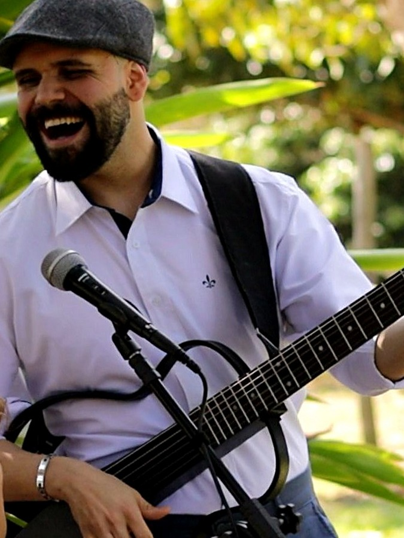

A História por Trás da LA Weddings
Duas trajetórias, dois olhares, uma mesma paixão: transformar momentos importantes em memórias inesquecíveis.

Luiza Arruda
Atriz e cantora
Bacharel em Teatro pela Célia Helena e formada em Teatro Musical pelo SESI. Com experiência em musicais como Chaplin e O Pequeno Príncipe, além de eventos e bandas de baile, Luiza traz para a LA Weddings o olhar da arte, da presença e da emoção.

Davi D'Assunção
Músico, produtor e gestor cultural
Construiu sua trajetória entre a música, a produção, dados e a criação de experiências. Com formação multidisciplinar, Davi traz um olhar criativo, sensível e atento aos detalhes para cada apresentação da LA Weddings.
A LA Weddings nasceu para celebrar histórias de um jeito diferente.
Perguntas Frequentes
Vocês tocam na cerimônia, no coquetel e na festa?
Sim! O repertório é pensado para acompanhar cada momento do casamento — do violão intimista da cerimônia até o show completo que leva todo mundo pra pista na festa.
O repertório pode ser personalizado?
Com certeza. Montamos o repertório junto com o casal, incluindo a música da entrada, do primeiro beijo, da valsa e os pedidos especiais que fazem parte da história de vocês.
Qual o tamanho da formação musical?
Depende do estilo do evento: pode ser só voz e violão para uma cerimônia intimista, ou uma formação maior com banda completa para a festa. Montamos a formação ideal para o seu orçamento e o clima que você imagina.
Como funciona o orçamento e a reserva de data?
É só chamar no WhatsApp contando a data, o local e o estilo do evento. Enviamos uma proposta personalizada e, para confirmar a data, pedimos um sinal de reserva.
Vocês atendem eventos fora de São Paulo?
Sim, viajamos para atender casamentos em outras cidades e estados. Nesses casos, deslocamento e hospedagem entram como um adicional no orçamento.